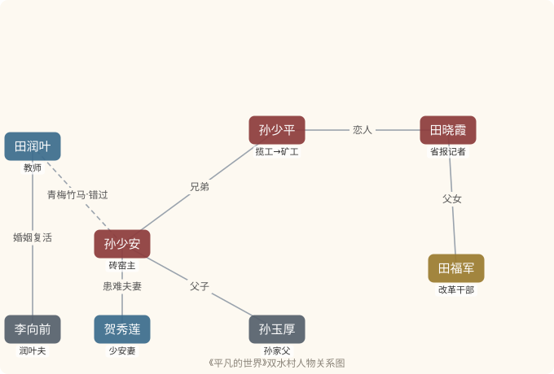

平凡的世界
| 作者 | 路遥 |
|---|---|
| 成书/出版 | 1986—1988年三部陆续出版，1991年获第三届茅盾文学奖（求是网） 路遥：从《人生》到《平凡的世界》（求是/《求是》2019年第6期）（官方期刊） |
| 国别/地区 | 中国 |
| 时代 | 现当代 · 当代 |
| 体裁 | 长篇小说（三部曲，约100万字） |
| 语言 | 汉语（白话，陕北方言色彩） |

《平凡的世界》双水村人物关系图（人物关系图）
二、创作背景
写作动因：路遥在《人生》名满天下后，'决定写一部规模很大的书'——全景式地书写1975—1985年中国城乡社会的大转型（光明日报文章）。他以'早晨从中午开始'的昼夜倒错方式写作，甚至透支健康（光明日报文章）。
结构：三部、六卷、约一百万字（光明日报文章）。三部于1986—1988年间陆续出版（WebSearch 摘要：1988年完成全三部）；1991年获第三届茅盾文学奖（求是网）。
时代背景：小说覆盖从'文革'末期（1975）到改革开放初期（1985）的中国——包产到户、乡镇企业、高考恢复、进城打工，是转型中国最完整的一部小说编年史。
三、内容脉络
第一部（1975—1978）：黄土高原双水村，孙家两兄弟的命运起点。哥哥孙少安与田润叶青梅竹马却因贫富悬殊放弃；弟弟孙少平高中毕业，在原西县城揽工，与郝红梅的青涩情愫夭折。县革委会副主任田福军推行农村改革，与旧势力冲突。
第二部（1979—1982）：包产到户。少安贷款买骡子拉砖、办起砖窑致富又塌窑破产；少平不甘被土地拴住，到黄原城做揽工汉，在工地上读书，与省报记者田晓霞相恋；润叶的丈夫李向前车祸致残，婚姻在苦难中复活。
第三部（1982—1985）：少平成为煤矿工人（大牙湾煤矿），在井下完成精神成人；田晓霞在抗洪采访中牺牲——全书最痛的一击；少安的砖窑东山再起、资助村里建小学，妻子秀莲却在成功时病倒；孙少平拒绝调离煤矿，回到大牙湾——'平凡的世界'里平凡人的庄严选择。
四、主要人物表
| 人物 | 身份 | 说明 |
|---|---|---|
| 孙少平 | 农家子弟→揽工汉→煤矿工人 | '读书人'的精神觉醒：在苦难中通过阅读与劳动确认自我——千万青年的精神偶像 |
| 孙少安 | 少平之兄，生产队长→砖窑主 | 留在土地上的改革者：与贺秀莲的患难婚姻 |
| 田晓霞 | 地委书记之女，省报记者 | 少平的恋人，理想的化身，抗洪牺牲 |
| 田润叶 | 田福堂之女，教师 | 与少安的爱情悲剧，婚后照护瘫痪的丈夫李向前 |
| 贺秀莲 | 山西姑娘，少安之妻 | 不要彩礼、患难与共，肺癌（晚期）结局令人扼腕 |
| 田福军 | 改革派干部 | 小说的政治线：从县到省的改革开放实践者 |
| 孙玉厚 | 孙家父亲 | 老实巴交的农民父亲 |
五、主题与艺术特点
- 平凡者的尊严：'平凡的世界'里普通人通过劳动与读书获得精神的高度——少平在煤矿的选择是对'成功学'的拒绝。
- 城乡二元的中国：揽工与煤矿是1980年代'进城'的最早书写；爱情（少平-晓霞、少安-润叶）的等级错位正是城乡结构的投影。
- 劳动伦理：路遥把劳动写成救赎——少安的砖窑、少平的煤窑都是'用双手创造生活'的庄严实践（光明日报文章：扎根时代的创造性劳动）。
- 艺术特点：全景式编年结构、双主人公对称设计、陕北方言与信天游的有机化入、温情与苦难并置的叙述语调。
六、影响与评论
- 求是网：'茅盾文学奖皇冠上的明珠，激励千万青年的不朽经典'（读者评价的转述）；第三届茅盾文学奖获奖作品。
路遥：从《人生》到《平凡的世界》（求是/《求是》2019年第6期）（官方期刊） - 求是网：新世纪以来'路遥热'持续升温，是新时期以来少有的畅销书兼长销书。
路遥：从《人生》到《平凡的世界》（求是/《求是》2019年第6期）（官方期刊） - 光明日报文章：与《白鹿原》并列为当代文学经典，其成功基于'扎根时代的创造性劳动'；陕军（陕西作家群）的代表作。
路遥、陈忠实：文学经典基于扎根时代的创造性劳动（光明日报，刊中国作家网）（官方文学机构） - 跨媒介：1989年电视剧版（通说）与2015年电视剧版（毛卫宁导演，通说待核）使小说两度成为全民话题；广播版（李野墨播讲）影响巨大（通说待核）。
路遥：从《人生》到《平凡的世界》（求是/《求是》2019年第6期）（官方期刊）
七、阅读建议
难点
- 百万字三部曲的体量需整块时间；可按部推进。
- 1975—1985年的政策背景（包产到户、价格双轨）需要一点当代史常识。
- 情感戏（晓霞之死、秀莲之病）的'苦情'笔法带时代审美，读时体会其真诚即可。
- 北京十月文艺出版社《平凡的世界》（全三册通行本）：标准读本。
- 《路遥全集》（北京十月文艺出版社）：含《早晨从中午开始》创作随笔。
- 2015年电视剧版与广播版（李野墨播讲，通说）可辅助。
先读第一部前几章（双水村全景）与少平在县城的段落 → 三部通读 → 对照《人生》看路遥处理'进城'母题的演进 → 最后读《早晨从中午开始》了解其写作观。
八、待核实
- 三部出版时间细表（第一部1986年《花城》与人民文学出版社？各部时间）待核。
- 茅盾文学奖授奖词与获奖名单（1991年第三届）原文待核。
- 电视剧版本年表（1989/2015）细节待核。
- 主人公原型（路遥弟弟王天乐等自传因素）的传记细节待核。
本页主要来源
相关作品：
路遥的其他收录作品：平凡的世界